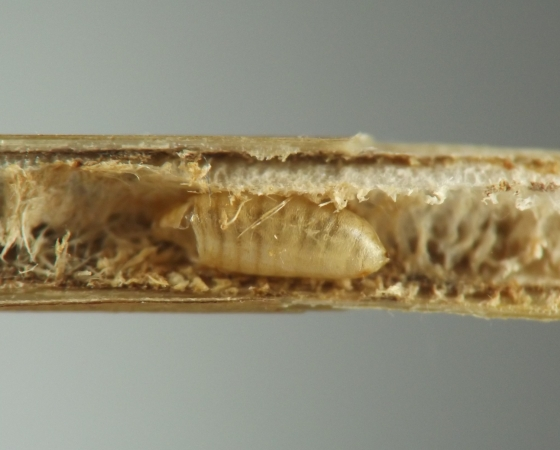
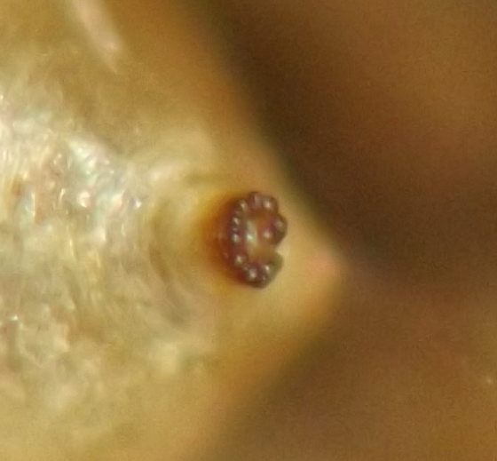
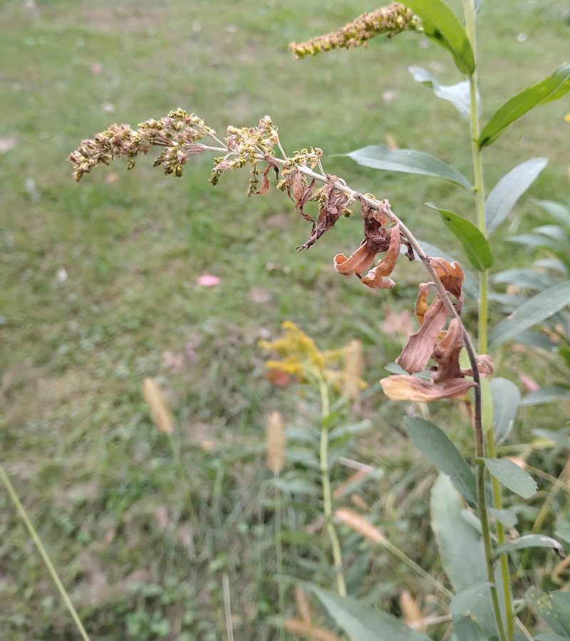
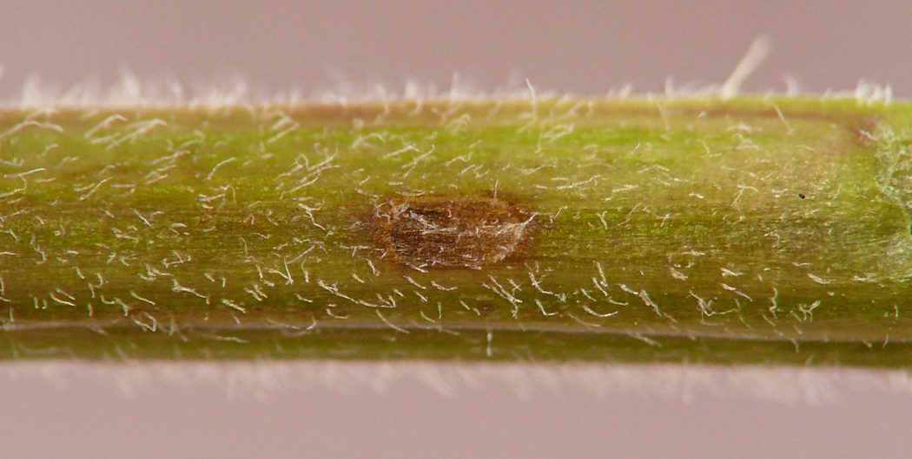
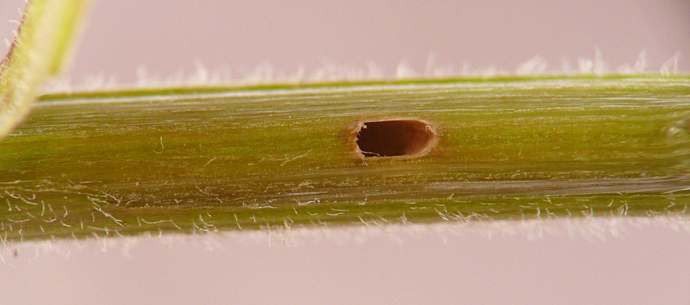
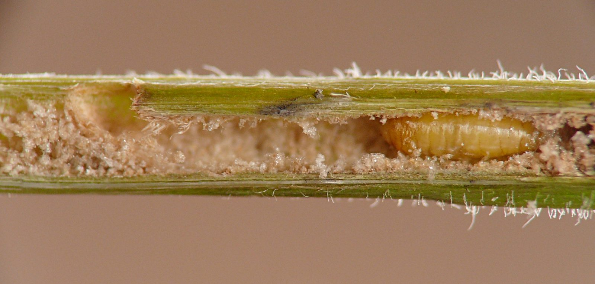
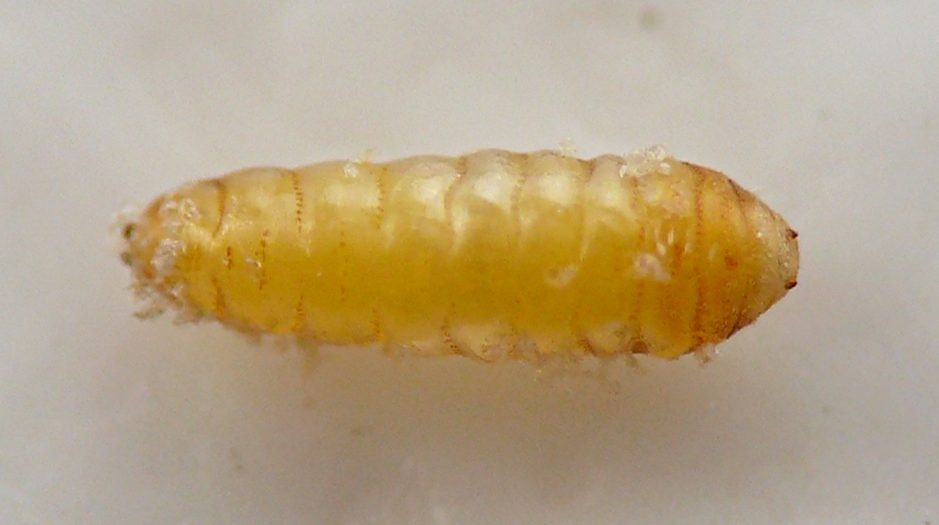
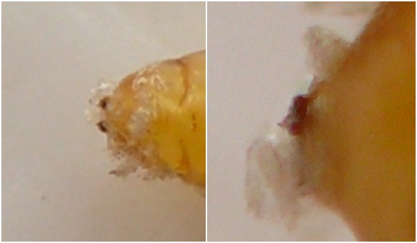

Stem borer (Diptera: Agromyzidae) in Solidago
| Record no.: | 0519 |
|---|---|
| Feeding guild: | Stem borer |
| Taxonomy: | Diptera: Agromyzidae: Melanagromyza (multiple spp.?) |
| Stages observed: | trace, puparium, adult |
| Distribution observed: | IA |
| Hosts in Solidago: | S. canadensis complex (includes S. altissima, S. canadensis, and S. gigantea); S. flexicaulis (zigzag goldenrod) |
In October 2021 I collected a stem of Solidago flexicaulis that was being mined by an Ophiomyia stem miner agromyzid. Later, an Ophiomyia adult and a Melanagromyza adult emerged from the stem, and when I dissected the stem interior I found a spent puparium in a tunnel in the pith (images 519-07 and 519-08).
Also, in October 2025 I found an upper stem of Solidago sp. that had shriveled and died down prematurely. Examining it, I found an an agromyzid puparium in a tunnel in the pith. The tunnel was confined to the upper stem and filled most of the stem diameter. Prior to pupation, the larva had established an operculum in the outer wall of the stem for the later emergence of the adult fly. The heavily ragged texture of the tunnel walls, the shape of the puparium, and the plant damage were all quite similar to one of the agromyzid borers I have documented in Symphyotrichum spp. as part of this survey (record 0542). These characteristics were also different from those of the October 2021 S. flexicaulis collection, suggesting two species may be involved.

 Prev
Prev
{kind=link}
{kind=link}

{kind=link}

{kind=link}

{kind=link}

{kind=link}

{kind=link}

{kind=link}

Page created: March 16, 2026. Last update: none